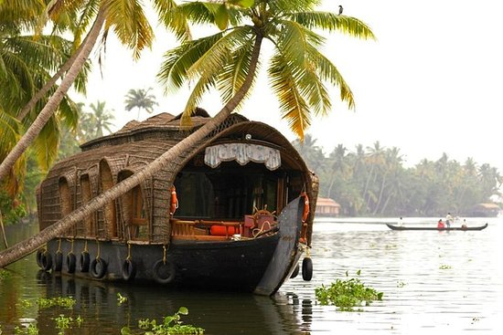
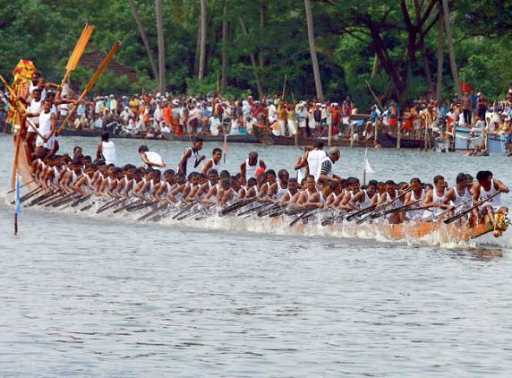

Allepey Backwaters
Referred to as the 'Venice of the East', Alleppey (now Alappuzha) is what you call, a true paradise.
Adorned with a picture perfect landscape, sparkling rivers,
lush greenery, and beautiful freshwater lakes, Alleppey is home to immense natural beauty.
Winters are the best time to visit Allepey as the weather is mild and pleasant.
1 / 3

2 / 3

Nehru Trophy Boat Race
The Nehru Trophy Boat Race on the Punnamda Lake, near Alappuzha, held on the second Saturday of August every year, is the most competitive and popular of the boat races. On the day of this fiercely fought boat race, the tranquil lake front is transformed into a sea of humanity with an estimated two lakh people, including tourists from abroad, coming to watch the event. For the people of each village in Kuttanad, a victory at this race for their village boat is something to be celebrated for months to come.The major attraction of the boat race is the competition of snake boats chundanvallams or snake boats.Chundans (snake boats) are an impressive sight, measuring over 100 feet in length, with a raised prow.
The Nehru Trophy Boat Race on the Punnamda Lake, near Alappuzha, held on the second Saturday of August every year, is the most competitive and popular of the boat races. On the day of this fiercely fought boat race, the tranquil lake front is transformed into a sea of humanity with an estimated two lakh people, including tourists from abroad, coming to watch the event. For the people of each village in Kuttanad, a victory at this race for their village boat is something to be celebrated for months to come.The major attraction of the boat race is the competition of snake boats chundanvallams or snake boats.Chundans (snake boats) are an impressive sight, measuring over 100 feet in length, with a raised prow.
3 / 3

Allepey Beach
Alappuzha Beach is a beach in Alappuzha town and a tourist attraction in Kerala, India. Beach has an old pier which extend to sea is over 150 years old. Alappuzha beach host many events annually like Alappuzha beach festival, Sand art festival and many more.
Alappuzha Beach is a beach in Alappuzha town and a tourist attraction in Kerala, India. Beach has an old pier which extend to sea is over 150 years old. Alappuzha beach host many events annually like Alappuzha beach festival, Sand art festival and many more.